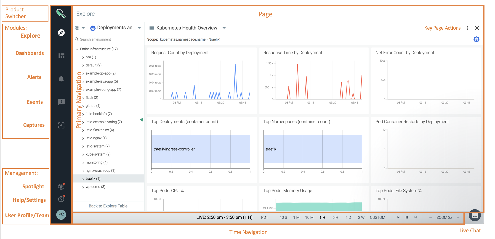

Explore
The Sysdig Monitor web interface centers around the Explore module, where users will do the majority of their infrastructure monitoring. The sections below outline the key areas of the interface, provide an overview of the most common workflows, and detail basic navigation steps.
The C-Frame Structure
The image below provides a complete view of the Sysdig Monitor c-frame style interface:
|  |
There are several key areas highlighted in the image above:
Section | Description |
|---|---|
Product Selector | Allows users to switch between Sysdig products. |
Modules | Quick links for each of the main Sysdig Monitor modules: Explore, Dashboards, Alerts, Events, and Captures. |
Management | Quick links for Sysdig Spotlight, help/additional material, and the user profile configuration settings. |
Page | The main section of the interface. |
Time Navigation | Allows users to customize the time window used for displaying data. |
Workflows
While every user has unique needs from Sysdig Monitor, there are three main workflows that users tend to follow when building out their interface, and monitoring their infrastructure.
Note
The first workflow assumes that an alert has not been triggered yet.
Workflow One
Start with an overview, identify a problem area, then drill-down into the data. This workflow is the most basic approach, as it begins with a user monitoring the overall infrastructure, rather than with a specific alert notification. The workflow tends to follow the following steps:
Organize the infrastructure with groupings.
Define key signals with alerts and dashboards to detect a problem.
Identify a problem area, and drill down into the data using dashboards, metrics, and by adjusting groupings and scope as necessary.
Workflow Two
Start with an event notification, and begin troubleshooting. This workflow begins with an already configured alert and event being triggered. Unlike workflow one, this workflow assumes that pre-determined data boundaries have already been set:
Explore the event by adjusting time windows, scope, and segmentation.
Identify the exact area of concern within the infrastructure.
Drill down into the data to troubleshoot the issue.
Workflow Three
Customize default dashboard panels to troubleshoot a potential issue. This workflow assumes that an issue has been identified within one of the default dashboards, but alerts have not been set up for the problem area.
Copy the displayed panel to a new dashboard.
Create an alert based on the dashboard panel.
Configure a Sysdig Capture on demand.